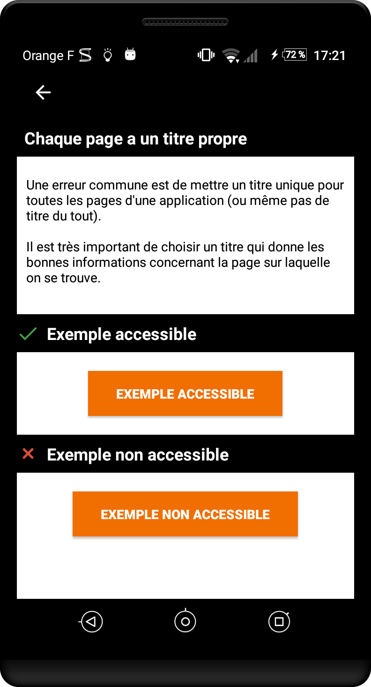
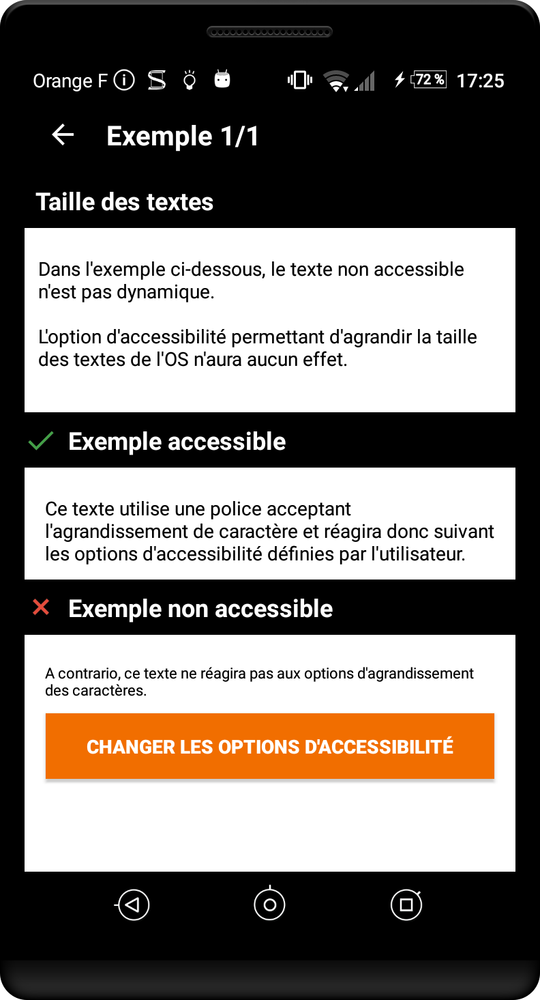

Android accessibility guide
This guide aims to present the different accessibility criteria for getting an accessible Android application. Each criterion explains for whom it is important, when it can be implemented, why it is important and the corresponding accessibility rule. The criteria are explained through code snippets and real case examples. We invite you to install the mDAN application for working examples of Talkback, the screen reader for Android, and other assistive tools. For more information on the tool (how to activate it, how to use it…) please refer to the Talkback section.
For the web, the level of accessibility to achieve to any HTML interface by the Orange group is the respect of the criteria of level AA of the Web Content Accessibility Guidelines (WCAG) 2.1, without blocking point following a test of user of technical help for the main scenarios for using the features of the site or application. For native mobile applications, a transposition of these criteria and compliance with the recommendations of the Android platform in terms of accessibility is requested, see these recommendations. The purpose is to explain these recommendations without replacing it.
Images #
Target: everyone, especially people with visual impairments.
When: as of design and during development.
Description:
Images are often used to convey a lot of information. As the saying goes, a picture is worth a thousand words. The blind cannot see the images, it is important that they get an alternative that gives all the information carried by the image.
In the case of an image containing text, this text will be the alternative. In the case of an image that provides information as a graph, a drawing or something else, the alternative will contain all necessary information conveyed by the image.
Some images are used for decorative purposes. These pictures do not require alternative. By default, on Android the pictures are not vocalized by the Talkback screen reader.
The illustrations in the application are also considered decorative images. The rule is the same: there is no alternative text to add.
Icons are, conversely, widely used as buttons for various features. So they need relevant text alternatives.
The alternative for an image is set via the contentDescription attribute (available to any child of View).
Checklist:
- The images conveying information must convey this information through their text alternative.
- Decorative images have no alternative text.
Users’ goal:
Access the information included in images for users who cannot access it. Blocking point: an image without textual description is unusable by people with visual impairments or those that cannot display images (mobile, low bandwidth…).
Examples:

By decomposing the image:
 no
no contentDescription
imageView.setContentDescription("parameters")
imageView.setContentDescription("edit the image name")
Colors #
Target: everyone, especially people with visual impairments, elderly people and people with vision problems (colour blindness, vision contrasts etc.)
When: as of design and during development.
Description:
Colours have a very important role in the transmission of information. Some colours are associated with concepts or feelings but we must never forget the part of the population that does not correctly distinguish colours.
Checklist:
- Do not use colour as the only way of conveying information, indicating an action, requesting a response or distinguishing an element.
- The contrast between the colour of the background and the text must be at least 7:1 and 4.5:1 for large font (can be measured with the Colour Contrast Analyser tool). Due to mobile constraints (screen, brightness,…) level AAA is required.
Users’ goal:
Ease of reading for all users, especially the visually impaired, or people in a very bright environment (outdoors).
Allow users not distinguishing colours (colour blind, visually impaired, mobile users in bright environment…) to access the same information by other means.
Tools:
The Colour Contrast Analyser application can quickly measure colour contrast levels (free for Windows and Mac).
The AccessibilityScanner application allows you to test quickly and simply the accessibility of your apps on some criteria including the colour contrast. Available on Android 6 and further.
Example of invalid contrast
The label “film | 8:40 PM…” does not have enough contrast. It will not be readable by all users.

Example of information conveyed through valid and invalid colour:

Alternative text #
Target: everyone, especially people with visual impairments.
When: as of design, during content writing and development.
Description:
Text alternatives are at the core of mobile accessibility. Thanks to them, a visually impaired user can use an application without loss of information.
As for the images, it is important to add a text alternative when information is not available for the visually impaired/blind. This is the case of components that provide information by colour, shape, position, sound… On mobile, all components can have a text alternative, it is possible to enrich the native vocalization of an element, including a simple text.
Space on mobile is reduced, we often use abbreviations for text. However, this raises issues for users of screen readers that vocalize abbreviations literally. To correct these vocalizations, simply place a text alternative on the text. This alternative contains the expanded text. Note that Talkback can recognize some common abbreviations. For example, “etc.” and “Dr.” are vocalized “etcetera” and “doctor”.
Some images are frequently associated with text to give information. This is the case of “unread messages” when a badge shows the number of messages to read and which describes a “message”. In this case, the solution is to set a text alternative on the text that gives all the necessary information. For example: “3 unread messages”. One can also set this alternative on the images but in this case we must make the text “invisible” to the screen reader.
The text alternative of an element is set via the contentDescription attribute (available to any child of View). For the buttons in the ActionBar (or ToolBar) the title attribute must be set.
The text or its alternative is vocalized automatically with information on the type of component (button, check box ...), its possible state (checked off, selected), if it is usable (disabled). For more technical information on these attributes, we recommend that you read the text alternatives section in the developer guide.
Checklist:
- The elements that require alternative must have one.
- The alternative text must be clear and understandable.
Users’ goal:
Provide access to application information to screen reader users.
Example:
Below is a common example of an icon that is associated with a text (badge) to add information. In our case, the “mail” icon associated with the “3” in the badge means that we have “3 unread mails”. If no text alternative is added, two vocalizations will be read “unlabelled button” and “3”. It is obvious that we must add text alternatives.

containerView.setContentDescription("3 unread mails, button"); //We add a complete alternative (dynamically built before) on the container
containerView.setImportantForAccessibility(View.IMPORTANT_FOR_ACCESSIBILITY_YES); //The container is a View, not visible by the default accessibility API. We make it visible.
mailImageView.setImportantForAccessibility(View.IMPORTANT_FOR_ACCESSIBILITY_NO); //We hide the button icon to avoid information redundancy
badgeTextView.setImportantForAccessibility(View.IMPORTANT_FOR_ACCESSIBILITY_NO); //The text is hidden to avoid information redundancy
containerView.contentDescription = "3 unread mails, button" //We add a complete alternative (dynamically built before) on the container
containerView.importantForAccessibility = View.IMPORTANT_FOR_ACCESSIBILITY_YES //The container is a View, not visible by the default accessibility API. We make it visible.
mailImageView.importantForAccessibility = View.IMPORTANT_FOR_ACCESSIBILITY_NO //On masque le bouton-icône pour éviter une redondance d’information
infobulleTextView.importantForAccessibility = View.IMPORTANT_FOR_ACCESSIBILITY_NO) //The text is hidden to avoid information redundancy
Title and header #
Target: everyone
When: as of design and during content writing.
Description:
The page title is the first element vocalized or seen on a mobile screen. It makes navigation easier for everyone: at any time, we know where we are in the application.
A common mistake is to set the same title for every page of an application (or even no title at all).
Checklist:
- Each screen must have its own title allowing us to know where we are in the application navigation (together with the back button).
Users’ goal:
Allow users to identify the topic of a page, to locate and get a clear idea of the content of the page without having to read it.
Invalid example:
Element states #
Target: everyone, especially people with visual impairments.
When: during development.
Description:
If an element does not vocalize its status, nature or state, the Talkback user is unable to understand what is happening on the screen. Not specifying that a view is unfolded or that we have tabs are very common examples.
Common mistake: tabs. By default, tabs in Android do not give information on their nature and their state. It is therefore the responsibility of the developer to provide this information to the user via the corresponding accessibility attributes (contentDescription). In this case, a good alternative for the title of a tab can be “tab, tab title – 1 of 3 – selected”.
Another common instance of elements that do not vocalize their state: expandable views. Again, thanks to the text alternative title of the view, we can vocalize the state of the view for Talkback users.
To set this kind of information, use the contentDescription attribute (availble to any child of View).
Checklist:
- Any item whose status changes when using the application must vocalize its status through its text alternative. For example, an item that can be selected/unselected must vocalize its state through a text alternative.
Users’ goal:
Allow screen reader users to access components’ information, their status, their nature so they can use them without any difficulties.
Example:
To see a code snippet that corrects this issue, please refer to the corresponding page of the Developer Guide.
Standard components #
Target: everyone.
When: When choosing the libraries and during development.
Description:
Accessibility is taken into account in native components (most of the time). Additionally, the use of standard components allows the user to be in a situation or behaviour that they are already used to. Navigation through a standard interface is more comfortable.
Use native components as much as possible and change their appearance. If no standard component corresponds to the need, create a dedicated component based on a standard component while keeping the navigation and accessibility consistency.
Users’ goal:
Improve user navigation.
Technical Objective:
Improve overall maintainability. Reduce development time.
Touch target #
Target: everyone, especially people with motor impairments
When: as of design and during development.
Description:
If a touch target of a component is too small, it can prevent some users from enjoying the application. This can lead to frustration that can result in uninstalling it. Each clickable element must have a large enough touch target.
Checklist:
- 48 dp is the recommended touch target size for elements according to Google (height and width, with an 8 dp margin around the element).
Users’ goal:
Improve user experience.
Tools:
The AccessibilityScanner application allows you to test quickly and simply the accessibility of your apps on some criteria including the touch target size. Available on Android 6 and further.
Valid example:
In the examples below, the black box corresponds to the size of the interactive area.

Invalid example:

Ghost element #
Target: people with visual impairments.
When: during development.
Description:
Although invisible on the screen, some elements can be vocalized by the screen reader (elements positioned outside the visible area or hidden by other elements). The superposition of screens is frequent when designing mobile apps but it generates very heavy accessibility problems if it is not done properly from the start. A screen reader such as Talkback is able to read information from a view that is placed “below” another. But if the user is able to interact with this view, it totally disturbs their navigation which quickly becomes impossible.
Common problem: fragments. A fragment is a component that can be easily stacked on top of another. Improper use of fragments may lead to serious problems when navigating with a screen reader.
Read the article on the use of fragments for more information.
Checklist:
- TalkBack must not vocalize any undesirable element that belongs to another view than the one being used.
Users’ goal:
Allow screen reader users to navigate within the application without having hidden elements disturb the reading of the current view.
Invalid example:
In the example below, the green frame represents Talkback’s focus. It vocalizes the content behind the current view (vocalization is displayed at the bottom of the screen).

Text size #
Target: everyone, especially people with visual impairments.
When: as of design and during development.
Description:
The user has the possibility of increasing the text size via an accessibility option. In order to make the application behave according to this option, it is necessary to use dynamic text sizes that adjust based on user settings. Too small text often won’t be noticed by some visually impaired users.
The application must implement dynamic text sizes, ensure good responsiveness of the display areas to text enlargement (containers that fit the size of their content). You should also ensure a minimum size for text (14sp).
In order for the “Huge font size” option to properly interact with the application, several points are to be respected during the development:
- Use dynamic font size: the “sp”. This unit, specific to Android, allows to have a font size proportional to the pixel density of the display. It is highly recommended to use it for text, at least to get a uniform design on all types of Android device.
- Manage content overflows: A common mistake is to use a dynamic text size (“sp”) but not to pay attention to the container size. If the text gets bigger, the container must adapt so there is no overflow. One can perfectly play with the
min-heightandheightattributes for correct result (theheightset towrap_contentandmin-heightset to the default desired height).
Checklist:
- The application correctly responds to the Huge font size option.
- Minimum text size must be 14sp.
Tools:
The AccessibilityScanner application allows you to test quickly and simply the accessibility of your apps on some criteria including text size. Available on Android 6 and further.
Users’ goal:
Allow users (visually impaired, mobility, elderly people…) to increase the text size for easier access to information.
Example:
Content Control #
Target: everyone, especially people with visual and cognitive deficiencies.
When: as of design and during development.
Description:
On mobile, screen readers try to notify the user when there is a context change. In some cases, it can give constant vocalizations, and can therefore become inaudible, or prevent any user action.
The user must control the content at all times. This is especially true with interactive content. So avoid video players launching directly in full screen mode, or videos starting automatically without user action, or a carousel scrolling automatically etc.
Checklist:
- All interactive content must be controllable by the user (pausing a carousel, adding an accessible button to exit full-screen mode, etc.).
Users’ goal:
Allow users to keep control on the application. Allow the screen reader user to avoid noise pollution which may affect navigation.
Technical goal:
Improve natural indexation.
Changing content #
Target: everyone, especially people with visual impairments.
When: as of design and during development.
Description:
When content is dynamically modified after a user action, the screen reader must be notified. Without any voice feedback, the user does not know that the content has changed.
If the content has changed dynamically after a user action, it is important that the screen reader is notified so that it triggers a vocalization. E.g. refreshing a list or a timer.
A simple vocalization can be enough to warn the user. It is very easy to trigger vocalizations with Talkback. Warning: we are talking about the vocalization when Talkback is enabled and not TTS (Text To Speech), the latter can operate whether Talkback is on or not. Just call the announceForAccessibility method with the parameter id of the string to vocalize. Note: the announceForAccessibility method is available on any item that inherits from View and is vocalized in the default system language.
It is also possible to specify that a view is a live region, that is to say that its content is subject to change dynamically and should in this case notify the Accessibility API. This will result in generating vocalizations with Talkback for example. A typical use case: on a form, if the user makes a mistake and an error message appears, the view containing the message must be defined as a live region. You must use the setAccessibilityLiveRegion method that takes a mode parameter for the live region. There are 3 modes:
ACCESSIBILITY_LIVE_REGION_NONE: this view is not a live region. This is the default for most views.ACCESSIBILITY_LIVE_REGION_POLITE: when a change occurs, vocalizations are triggered by the changes. These vocalizations are “polite”; they have lower priority than system vocalizations for example.ACCESSIBILITY_LIVE_REGION_ASSERTIVE: when a change occurs, vocalizations are triggered by the changes. These vocalizations are “assertive”; they have the highest priority and are immediately vocalized. Note thesetAccessibilityLiveRegionmethod is available on any class that inherits fromView.
Checklist:
- With a screen reader, ensure that dynamic changes are vocalized.
Users’ goal:
Provide access to changing content to screen reader users.
Horizontal scroll #
Target: everyone, especially people with visual impairments.
When: as of design and during development.
Description:
A horizontal scroll can be very difficult to detect if no visual feedback is displayed to help the user understand that there are several pages.
Do not hesitate to display an element to indicate a horizontal scroll (dots for example). When necessary, also add “next” and “previous” buttons.
Checklist:
- The horizontal scrolls are visually indicated.
- When the screen reader is on, a mechanism enables the user to go from page to page when a horizontal scroll is present.
Users’ goal:
Provide a visual indication to users when there is horizontal scroll. Allow screen reader users to scroll horizontally.
Valid example:

Invalid example:

Form #
Target: everyone, especially people with visual impairments.
When: as of design and during development.
Description:
Binding the form fields with their labels provides an additional vocalization allowing the user to understand what happens when filling out a form field.
There are 2 major techniques to achieve this:
- LabelFor: helps indicated that a view is the label of another view. This method takes the id of the view that is being labelled a a parameter. This method can be used with almost any type of form field. We can also use the android:labelFor xml attribute or programmatically setLabelFor.
- Hint: add an example text when the text field is empty. This method only works for TextView. Supports setting the id to a string. Can be used with the android:hint xml attribute or programmatically setHint.
Checklist:
- Form fields must be linked to a label if it is visible, otherwise a
hintis displayed.
Users’ goal:
Improve navigation and overall understanding of the page, because form fields describing the expected input are easier to fill for visually impaired users.
Reading order #
Target: people with visual impairments.
When: during development.
Description:
The reading order allows the screen reader user to get their bearings and to ensure functional coherence. It is therefore important to pay attention to it.
By default, the reading order of voice synthesis depends on several parameters: the “logical” reading order (in France), from left to right and top to bottom, and the parsing of xml (order of elements declaration). However, there are some cases where the screen reader cannot determine the correct order; it then uses the order in which elements are defined, leading to inconsistent vocalizations.
It is quite possible to redefine the reading order with two attributes:
accessibilityTraversalAfter: sets theidof a view after which this one is visited in accessibility traversal. A screen-reader must visit the content of the other view before the content of this one.accessibilityTraversalBefore: sets theidof a view before which this one is visited in accessibility traversal. A screen-reader must visit the content of this view before the content of the one it precedes.
Note: These attributes can be used directly in the xml but also in the code via the setAccessibilityTraversalBefore and setAccessibilityTraversalAfter methods. These methods are available for any element that inherits from View.
Checklist:
- Traversal order (Talkback) is logical and coherent.
Users’ goal:
Ensure logic order and coherent reading to screen reader users.
Example:
In this example, the default playback order depends completely on the implementation and on the order of element declaration. In this case: vol+, vol-, 1, 2, 3, 4, 5, 6, 7, 8, 9, p+, p-, 0. A more consistent reading order is 1, 2, 3, 4, 5, 6, 7, 8, 9, 0, vol +, vol-, p + p-.

volupButton.setAccessibilityTraversalAfter(myView.findViewById(R.id.remote0).getId());
voldownButton.setAccessibilityTraversalAfter(myView.findViewById(R.id.volup).getId());
channelupButton.setAccessibilityTraversalAfter(myView.findViewById(R.id.voldown).getId());
channeldownButton.setAccessibilityTraversalAfter(myView.findViewById(R.id.channelup).getId());
[…]
volupButton.accessibilityTraversalAfter = remote0.id
voldownButton.accessibilityTraversalAfter = volup.id
chaineplusButton.accessibilityTraversalAfter = voldown.id
chainemoinsButton.accessibilityTraversalAfter = chaineplus.id
[…]
Focus-based navigation #
Target: everyone, especially people with motor impairments or people using keyboard.
When: as of design and during development.
Description:
Focus-based navigation is very useful for people with motor or cognitive difficulties. This navigation allows to go through the interactive elements (elements on which an action can be performed). This is the kind of navigation that you can have with a Bluetooth keyboard paired to a smartphone.
To handle focus-based navigation, make sure to:
- Allow interactive elements to receive the focus: focus-based navigation only concerns interactive elements. If, for example, your application has clickable custom views, it must be ensured that these views are focusable by setting the
focusableattribute totrue. - Manage the focus order: through the
nextFocusDown,nextFocusUp,nextFocusRight,nextFocusLeftoptions, you can specify what view should take the focus when using the down, up, right and left arrows. - Managing the focus display: interactive elements must have the
state_focuseddefined and must be easily distinguishable when having the focus.
Note: nextFocusDown, nextFocusUp, nextFocusRight, nextFocusLeft, focusable and other focus management options are available either in the xml or programmatically.
For more information on the focus management on Android.
Checklist:
- The focusing order of navigation (keyboard) is logical and coherent.
- It should be visually easy to determine the element that has focus.
Users’ goal:
Allow keyboard/dock tablet/sequential navigation device users to access the application.
Screen orientation #
Target: everyone, especially people with visual or motor impairments.
When: as of design and during development.
Description:
Access to the content of an application must not depend on the orientation of the screen (portrait and landscape), unless a particular orientation is essential for understanding or using the content (projection, table…).
Checklist:
- Usage of standard graphic components that support both modes (fragments …), or define a
designspecific to each orientation. - The application is not locked in a mode (portrait or landscape).
Users’ goal:
- Ensure better readability of content for people who use magnification and move from portrait to landscape according to their need.
- Ensure a better readability of the content for the devices fixed on support (hospital bed, wheelchair…).